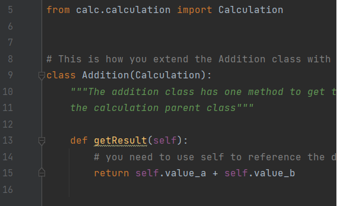
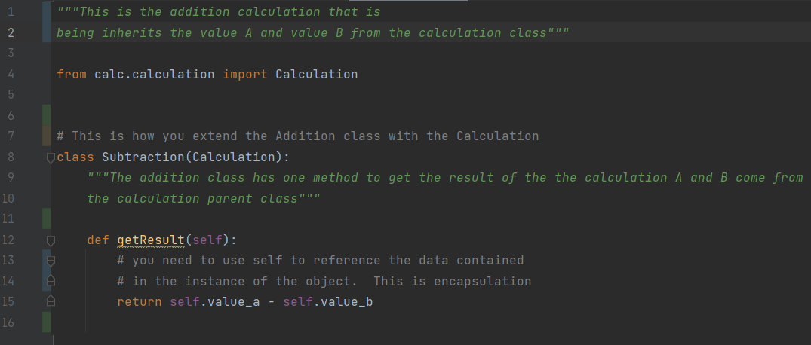
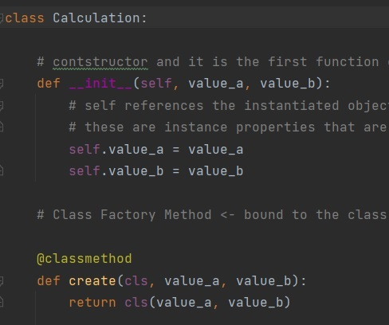

Encapsulation is one of the four fundamental concepts in object-oriented programming including abstraction, encapsulation,
inheritance, and polymorphism. Encapsulation is the packing of data and functions that work on that data within a single
object. By doing so, you can hide the internal state of the object from the outside. This is known as information hiding. In the
class "main", every instance of that "class calculator" such as "self.result = self.result + value_a", "self.result = self.result - value_a"
for functions such as def add_number, def subtract_number etc. are wrapped in that particular class and may be hidden from other Classes in the program.
So, whatever the scope of these methods is limited to the object of that class. This explains encapsulation in the main program.

The word polymorphism means having many forms. In programming, polymorphism means the same function name (but different signatures)
being used for different types. For example, In the calculator classes such as addition, subtraction, and multiplication,
function "def get_result(self)" may be used at multiple different instances in the calculator program. This explains Polymorphism
in the program wherein different instance of a function are being used for performing different operations.

Inheritance in programming means when certain properties of a Class say Calculation are passed on to its child classes such
as Addition, Subtraction and Multiplication. Variable names may be initialized in the parent class and may be passed as reference
to its children for performing further operations. From the import function "calc.calculation" properties of that class is
being derived in the subclasses.

An abstract class can be considered as a blueprint for other classes. For example class Calculation,
which allows you to create a set of methods that must be created within any child classes (Addition, subtraction, and
Multiplication) built from the abstract class. The variable declaration in the Calculation class is hidden from other
classes. This explains abstraction in Calculation.